Resting-state fMRI
Default mode network (DMN)
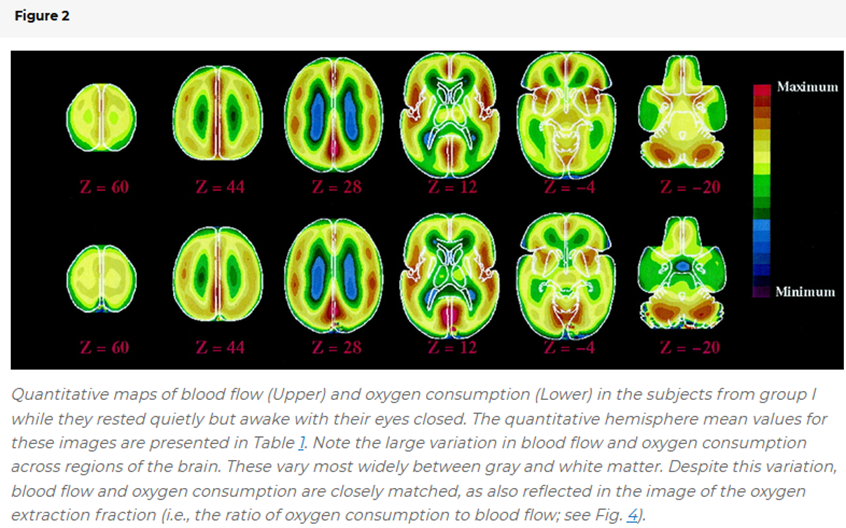
Resting state activity
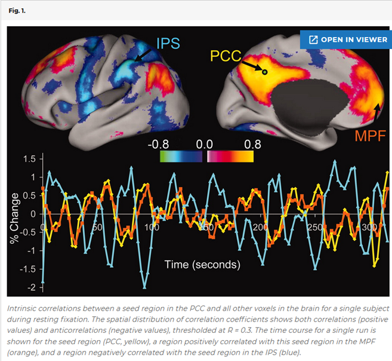
Reminder: the checkerboard experiment

Resting state fluctuations
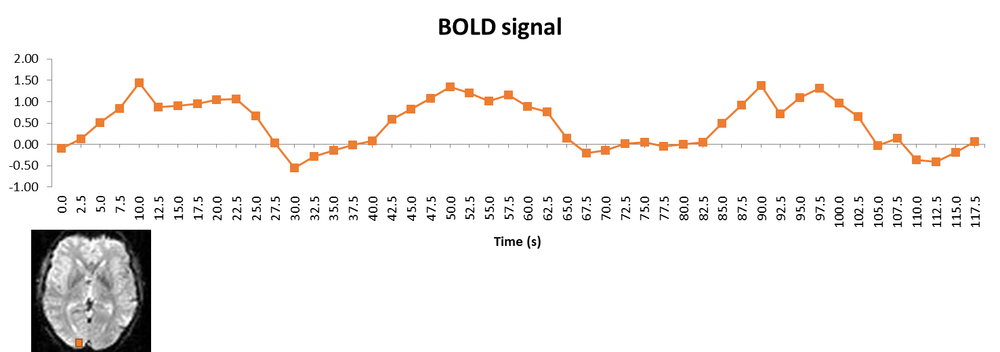
Typical analysis
Preprocessing
Extensive denoising
Functional “connectivity”
Other measures
Network science characteristics
Functional connectivity density
Preprocessing
Like in a typical fMRI experiment, see the corresponding chapter
Denoising using a GLM
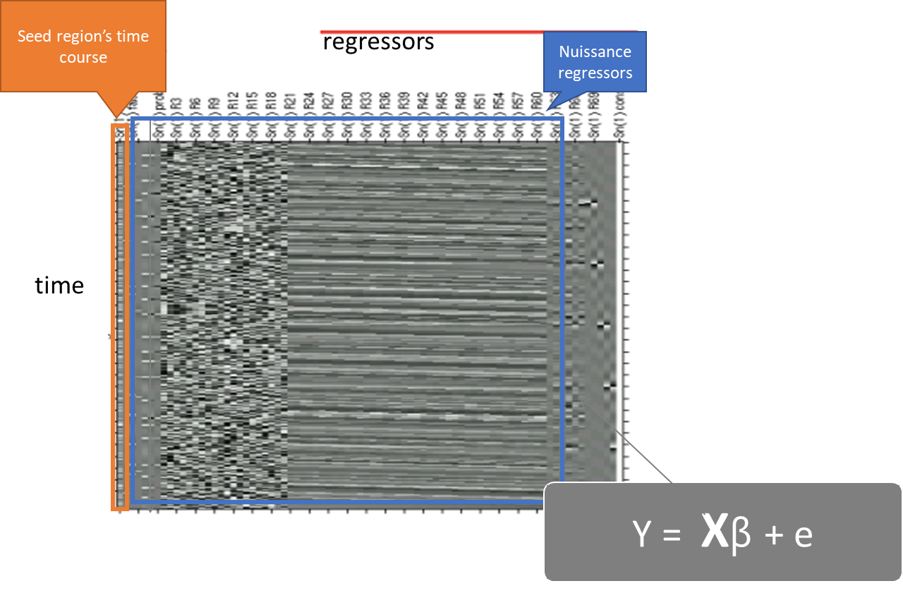
Physiology recording
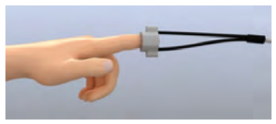
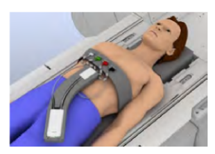
Raw data
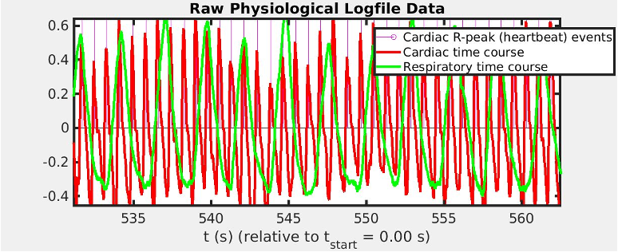
Regressors
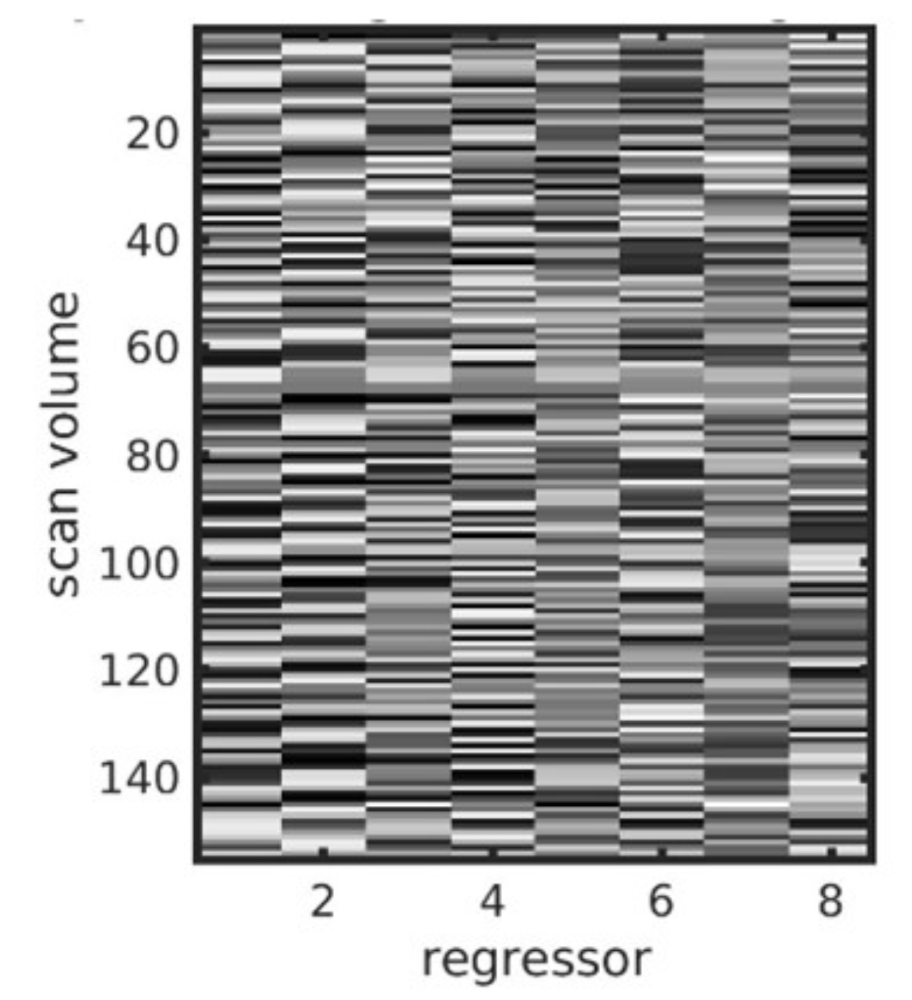
Spine coil respiration sensor
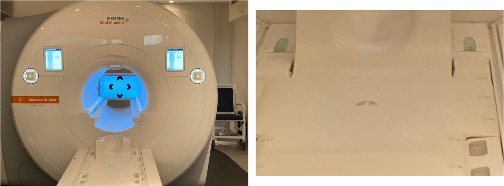
Seed-to-voxel connectivity
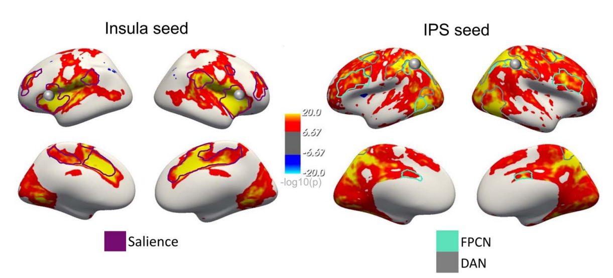
ROI-to-ROI connectivity
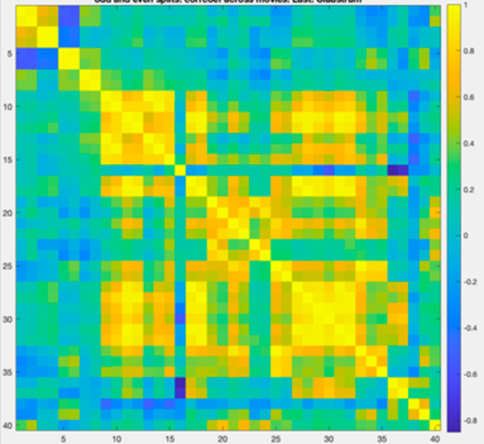
Parcellation schemes
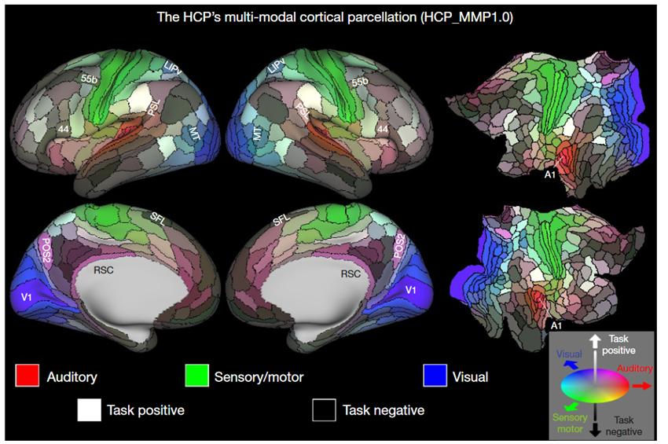
Independent component analysis
Network parcellation
Functional connectivity density mapping
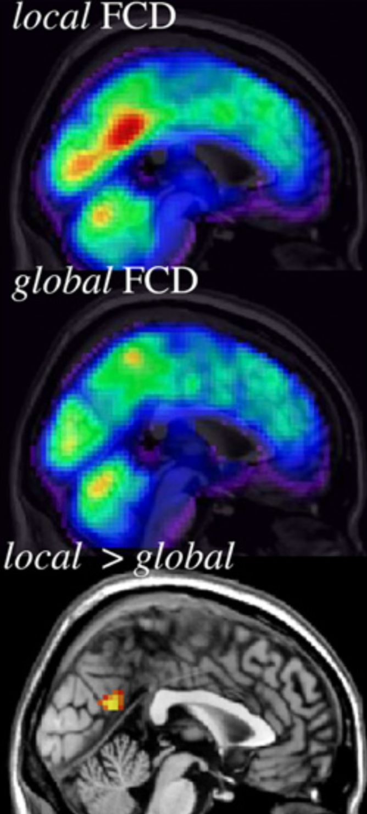
Graph theory
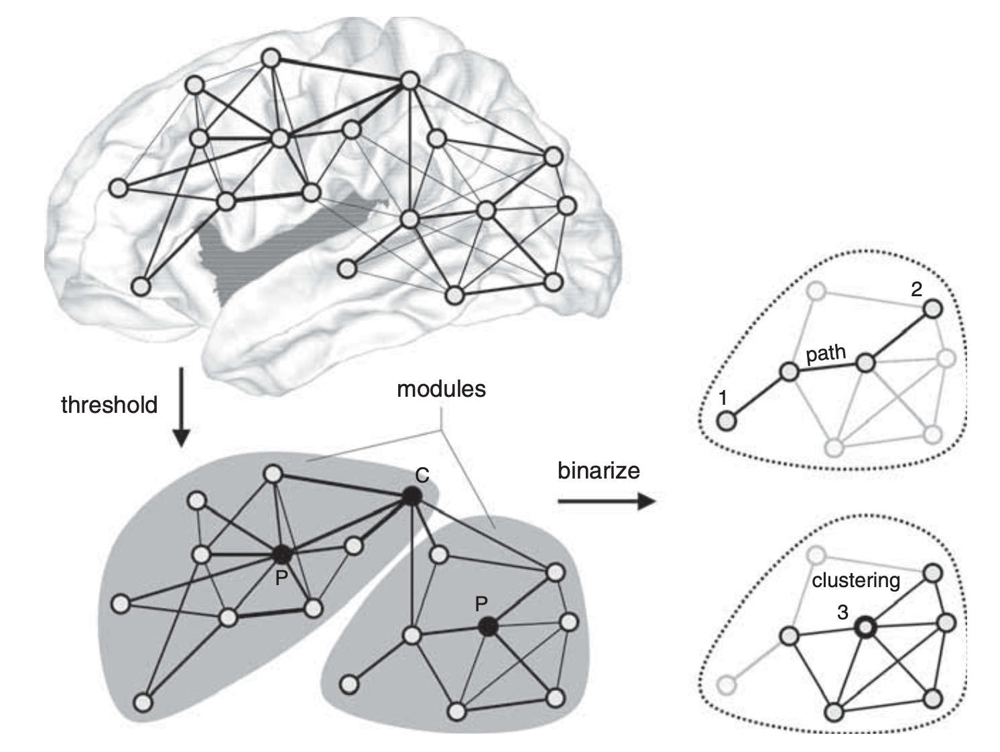
Software
References
Bassett, Danielle S, and Olaf Sporns. 2017. “Network Neuroscience.” Nature Neuroscience 20 (3): 353–64. https://doi.org/10.1038/nn.4502.
Fox, Michael D., Abraham Z. Snyder, Justin L. Vincent, Maurizio Corbetta, David C. Van Essen, and Marcus E. Raichle. 2005. “The Human Brain Is Intrinsically Organized into Dynamic, Anticorrelated Functional Networks.” Proceedings of the National Academy of Sciences 102 (27): 9673–78. https://doi.org/10.1073/pnas.0504136102.
Glasser, Matthew F., Timothy S. Coalson, Emma C. Robinson, Carl D. Hacker, John Harwell, Essa Yacoub, Kamil Ugurbil, et al. 2016. “A Multi-Modal Parcellation of Human Cerebral Cortex.” Nature 536 (7615): 171–78. https://doi.org/10.1038/nature18933.
Raichle, Marcus E., Ann Mary MacLeod, Abraham Z. Snyder, William J. Powers, Debra A. Gusnard, and Gordon L. Shulman. 2001. “A Default Mode of Brain Function.” Proceedings of the National Academy of Sciences 98 (2): 676–82. https://doi.org/10.1073/pnas.98.2.676.
Sporns, Olaf. 2010. “Networks of the Brain,” October. https://doi.org/10.7551/mitpress/8476.001.0001.
Tomasi, Dardo, and Nora D. Volkow. 2010. “Functional Connectivity Density Mapping.” Proceedings of the National Academy of Sciences 107 (21): 9885–90. https://doi.org/10.1073/pnas.1001414107.
Wilding, Marilena, Anja Ischebeck, and Natalia Zaretskaya. 2023. “Resting-State Neural Correlates of Visual Gestalt Experience.” Cerebral Cortex, February. https://doi.org/10.1093/cercor/bhad029.
———. 2024. “Respiration Recording for fMRI: Breathing Belt Versus Spine Coil Sensor.” Imaging Neuroscience 2. https://doi.org/10.1162/imag_a_00239.
Yeo, B T Thomas, Fenna M Krienen, Jorge Sepulcre, Mert R Sabuncu, Danial Lashkari, Marisa Hollinshead, Joshua L Roffman, et al. 2011. “The Organization of the Human Cerebral Cortex Estimated by Intrinsic Functional Connectivity.” Journal of Neurophysiology 106 (3): 1125–65. https://doi.org/10.1152/jn.00338.2011.